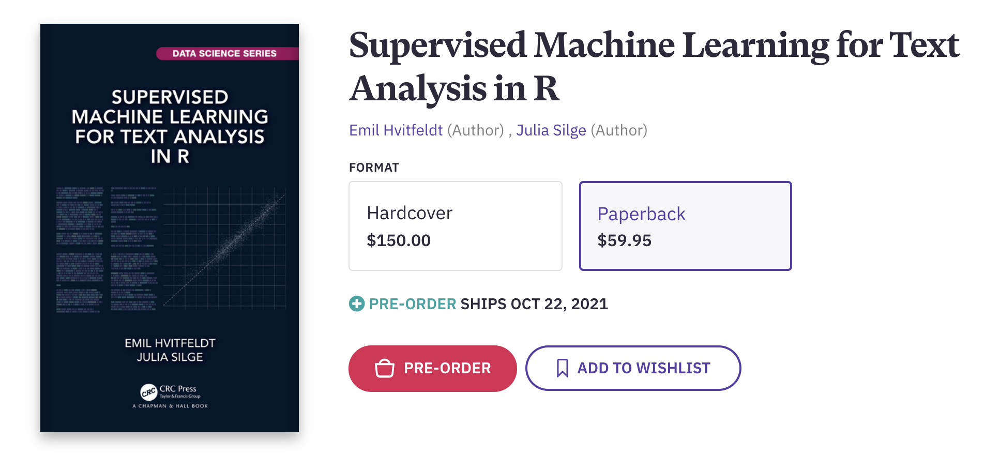
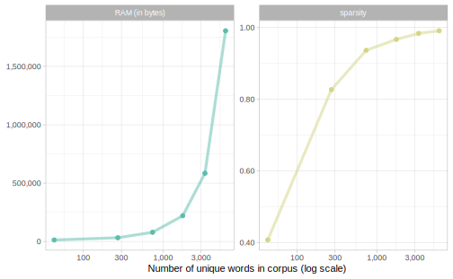
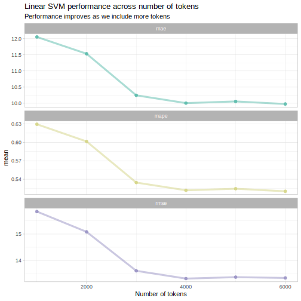

Supervised Machine Learning for Text Analysis in R is now complete
By Julia Silge in rstats
August 13, 2021
Last summer, Emil Hvitfeldt and I announced that we had started work on a new book project, to be published in the Chapman & Hall/CRC Data Science Series, and we are now happy to say that Supervised Machine Learning for Text Analysis for R (or SMLTAR, as we call it for short) is complete, in production, and available for preorder! You should be able to preorder it anywhere you normally buy books, such as Bookshop, Amazon, or directly from our publisher. The book is available in its entirety online at smltar.com, and we will continue to make the online version freely accessible.

Emil published a blog post last week outlining both his personal reflections and some analysis of the process of working on such a big project. I encourage you to check it out, especially to see the visualizations of how the files making up this book project changed over time. It has been a pleasure to work with Emil and I am so glad to have him as a generous and kind collaborator in bringing this project to life.
The book is divided into three sections.
- Natural language features: How do we transform text data into a representation useful for modeling? In the first section, we explore the most common preprocessing steps for text, when they are helpful, and when they are not. Machine learning with text is not only about model algorithms; this is an area where feature engineering has a huge affect on results. Some of my favorite aspects of these chapters are how we dig deep into steps that are often considered just a “default”, and explore what kind of representations we end up with depending on our choices. As just one small example, check out why we often look to sparse representations or embeddings for text modeling:

- Machine learning methods: We investigate the power of some of the simpler and more lightweight models in our toolbox. There is a lot of overlap in this section with my day job as a software engineer working on tidymodels, and I am excited to have this resource available to show folks how to use a flexible, consistent toolkit for modeling with text. For example, we walk through how to measure model performance changing as we add more tokens, and how to choose a simpler model with fewer tokens within some performance constraint.

- Deep learning methods: Given more time and resources, we see what is possible once we turn to neural networks. This section demonstrates how powerful it is to combine elements from the tidymodels framework with other modeling approaches, specifically Keras in this context. We start out the deep learning section with an overview that outlines the modeling process overall, and points out similarities and differences between using more traditional machine learning and deep learning.
One of our priorities as we wrote this book was to highlight how modeling with language is so often deeply connected to issues of identity, social understanding, and justice. We found that it made sense to draw these connections through the entire book, from preprocessing choices to evaluating models, truly from the first chapter to the conclusion. To reflect this reality of modeling with text data and who in our context is most often harmed, Emil and I have decided to donate the author proceeds from preorders to Black Girls Code, a non-profit that focuses on providing technology and coding education for young women of color in the US.
We have so many people to thank for their contributions and support, including our Chapman & Hall editors John Kimmel and Robin Lloyd-Starkes, the helpful technical reviewers, Desirée De Leon for the site design of the book’s website, and my coworkers on the tidymodels team. We hope you get a chance to check out our book, and that it can help you in your real-world text modeling!